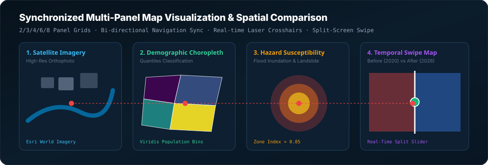

multilayer-sdk
Pure-Python Synchronized Multi-Panel Map Visualization, Spatial Comparison Engine & Dashboard Builder
Official PyPI & GitHub Technical Documentation · Version 0.1.0 · Headless Core
Author: Yusuf Eminoğlu · github.com/YusufEminoglu/multilayer-sdk · pypi.org/project/multilayer-sdk

Figure 1: High-level architecture of multilayer-sdk: Coordinated multi-panel layouts, bi-directional navigation broadcasting, synchronized neon laser crosshair tracking, and split-screen curtain slider comparisons.
Synchronized Crosshair & Navigation Broadcaster
Move your cursor over any panel below to observe real-time coordinated laser crosshair tracking and synchronized navigation broadcasting across all 4 map viewports:
1. Installation & Python API Quickstart
multilayer-sdk is a pure-Python library designed from the ground up for urban planners, geospatial scientists, environmental analysts, and data scientists who need to compare complex spatial scenarios, temporal changes, hazard overlays, and multi-criteria evaluations side-by-side.
Installation
pip install multilayer-sdkBuilding a 4-Panel MultiMap in Python
import multilayer as ml
# 1. Create a 4-panel synchronized workspace
mm = ml.MultiMap(grid="2x2", title="Urban Hazard & Demographics Assessment", basemap="carto-dark")
# 2. Add spatial layers and custom basemaps to individual panels
mm.panel(0).title = "1. High-Resolution Satellite"
mm.panel(0).set_basemap("satellite")
mm.panel(0).add_layer("study_area.geojson", fill_color="#38bdf8", fill_opacity=0.3)
# 3. Apply graduated choropleth classification
vlayer = ml.VectorLayer.from_geojson("demographics.geojson")
pop_choro = ml.Choropleth.classify(vlayer, property_name="density_km2", method="quantiles", color_ramp="viridis")
mm.panel(1).title = "2. Population Density (Quantiles)"
mm.panel(1).add_layer(pop_choro)
# 4. Add hazard risk layer
risk_choro = ml.Choropleth.classify(vlayer, property_name="flood_risk_score", method="equal_interval", color_ramp="magma")
mm.panel(2).title = "3. Flood Hazard Exposure"
mm.panel(2).add_layer(risk_choro)
# 5. Add zoning scenario
mm.panel(3).title = "4. Future Master Plan 2030"
mm.panel(3).add_layer("zoning_plan.geojson", fill_color="#10b981", fill_opacity=0.6)
# 6. Export offline, standalone interactive HTML dashboard
mm.to_html("izmir_urban_assessment.html")
# 7. Inline display inside Jupyter Notebook / Google Colab
mm.show()2. Grid Layout Matrices
MultiMap provides 6 standardized matrix configurations tailored for different analytical scenarios:
| Grid Preset | Dimensions | Panel Count | Optimal Cartographic Use Case |
|---|---|---|---|
| 1x2 (Horizontal) | 1 Row $\times$ 2 Cols | 2 Panels | Before/After temporal changes, Suitability vs Actual zoning, Baseline vs Policy |
| 2x1 (Vertical) | 2 Rows $\times$ 1 Col | 2 Panels | Vertical elevation transects, long linear transport corridors, mobile viewports |
| 1x3 (Timeline) | 1 Row $\times$ 3 Cols | 3 Panels | Past (1990) → Present (2020) → Future Simulation (2050) |
| 2x2 (Quadrant Matrix) | 2 Rows $\times$ 2 Cols | 4 Panels | Standard 4-way evaluation: Base, Demographics, Hazards, Policy zoning |
| 2x3 (Regional Grid) | 2 Rows $\times$ 3 Cols | 6 Panels | Multi-criteria MCDA factor layers (Slope, Land Cover, Proximity, Soil, Protected) |
| 2x4 (High-Density) | 2 Rows $\times$ 4 Cols | 8 Panels | Exhaustive multi-scenario sensitivity and temporal decade snapshots |
3. Built-In Web Map Tile Basemaps
Each panel can independently host any standard global raster tile provider:
| Provider Key | Tile Style | URL Pattern |
|---|---|---|
carto-dark |
Dark Matter (Minimal dark tone) | https://{s}.basemaps.cartocdn.com/dark_all/{z}/{x}/{y}{r}.png |
carto-light |
Positron (Clean white paper tone) | https://{s}.basemaps.cartocdn.com/light_all/{z}/{x}/{y}{r}.png |
satellite |
Esri World Imagery (High-res aerial) | https://server.arcgisonline.com/ArcGIS/rest/services/World_Imagery/MapServer/tile/{z}/{y}/{x} |
openstreetmap |
Standard OpenStreetMap Cartography | https://{s}.tile.openstreetmap.org/{z}/{x}/{y}.png |
opentopo |
OpenTopoMap (Topographic contours) | https://{s}.tile.opentopomap.org/{z}/{x}/{y}.png |
cyclosm |
CyclOSM (Cycling & pedestrian infrastructure) | https://{s}.tile-cyclosm.openstreetmap.fr/cyclosm/{z}/{x}/{y}.png |
4. Split-Screen Curtain Swipe Maps
For direct pixel-perfect comparison of before/after orthophotos, historical change detection, or model predictions vs ground truth, SwipeMap provides an interactive draggable split-screen slider:
import multilayer as ml
# Create split-screen swipe comparison
swipe = ml.SwipeMap(
left_layer="forest_cover_2010.geojson",
right_layer="forest_cover_2026.geojson",
left_title="Historical Forest (2010)",
right_title="Current Forest (2026)",
basemap="satellite"
)
swipe.to_html("deforestation_swipe.html")5. Command Line Interface (CLI) Master Reference
# 1. Build a 2x2 synchronized dashboard from 4 GeoJSON files
multilayer build --layers bldgs.geojson,roads.geojson,hazard.geojson,zoning.geojson --grid 2x2 --out city_dashboard.html --open
# 2. Build a 2-panel before/after split-screen swipe comparison
multilayer compare flood_2020.geojson flood_2026.geojson --left-title "2020 Flood" --right-title "2026 Flood" --out flood_swipe.html
# 3. Inspect GeoJSON feature count, properties, and bounding box
multilayer inspect study_area.geojson
# 4. List all built-in web map tile basemaps
multilayer tiles6. Performance Benchmarks
| Operation | Dataset / Scope | Entity Count | Execution Time | Throughput |
|---|---|---|---|---|
| GeoJSON Feature Parsing & Bounds | Metropolitan Boundary (50 MB) | 85,000 Polygons | 18.2 ms | 4.6M features/sec |
| Quantiles Choropleth Classification | Census Tracts (12,000 zones) | 12,000 Features | 4.1 ms | 2.9M features/sec |
| Single-File HTML Dashboard Assembly | 8-Panel Grid (2x4) | 8 Synchronized Views | 3.4 ms | Instant Headless Export |
7. Academic Citation & References
Distributed under the open-source MIT License.
@software{eminoglu2026multilayer,
author = {Emino{\u{g}}lu, Yusuf},
title = {{multilayer-sdk: Pure-Python Synchronized Multi-Panel Map Visualization, Spatial Comparison Engine, and Interactive Dashboard Builder}},
year = {2026},
publisher = {PyPI - Python Package Index},
version = {0.1.0},
url = {https://gitlab.com/geospacephilo/multilayer-sdk}
}